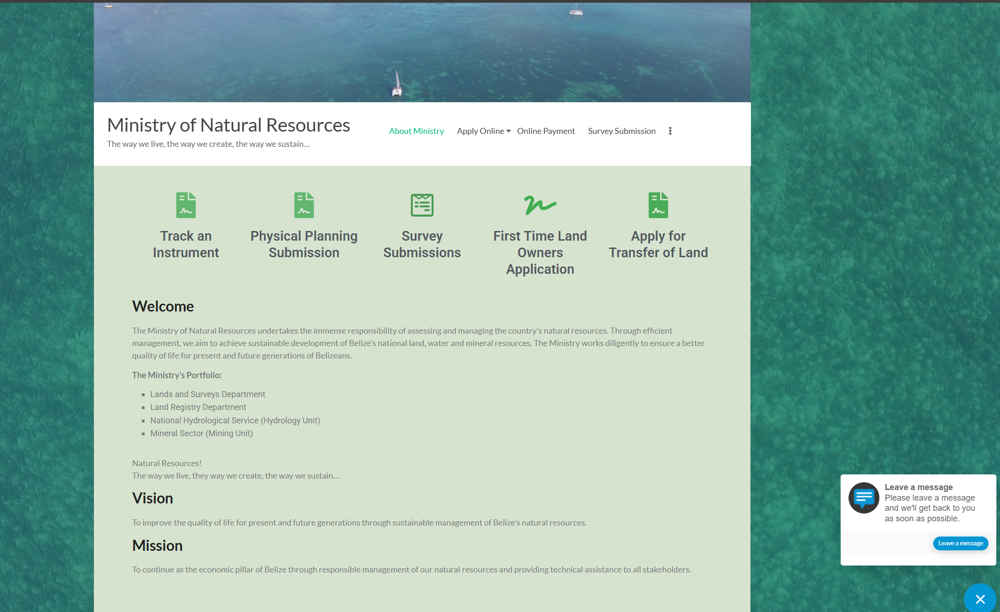

Ministry of Natural Resources
Analysis: This layout violates the principle of Proximity because the sidebar lists, service links, and contact details are packed tightly together without sufficient whitespace, creating a cluttered visual section where distinct categories are difficult to distinguish.
Improvement: I would improve this by adding significant padding (whitespace) between the Online Services and Department sections to create clear visual groups, allowing the user to instantly recognize the separation between different topics.